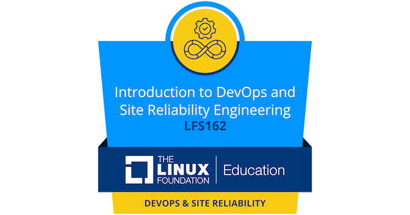
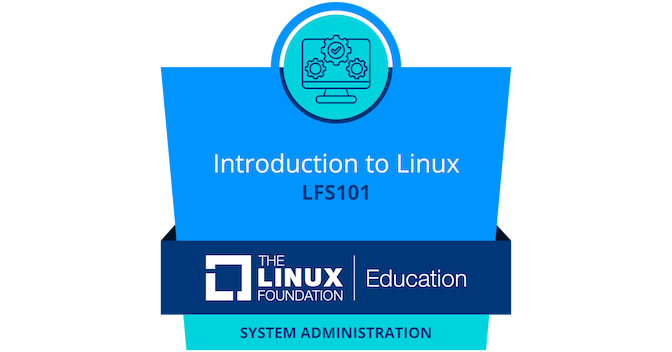
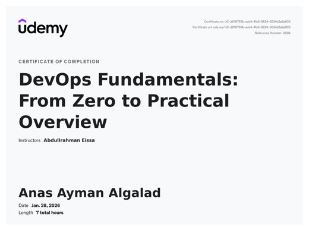
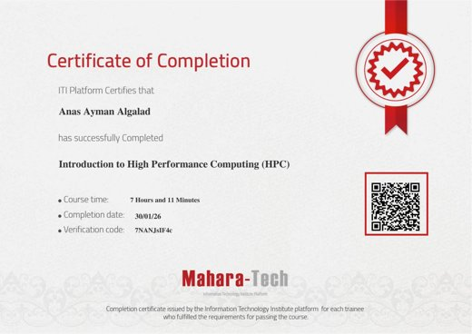
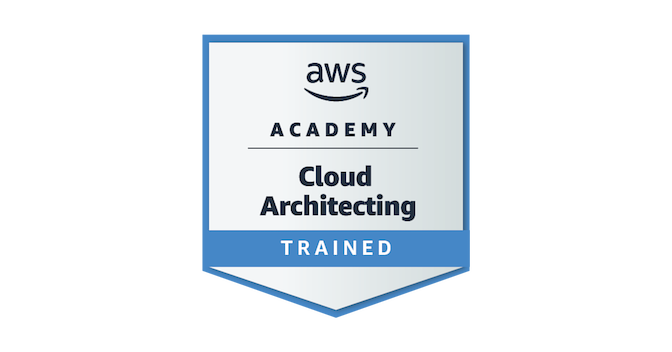
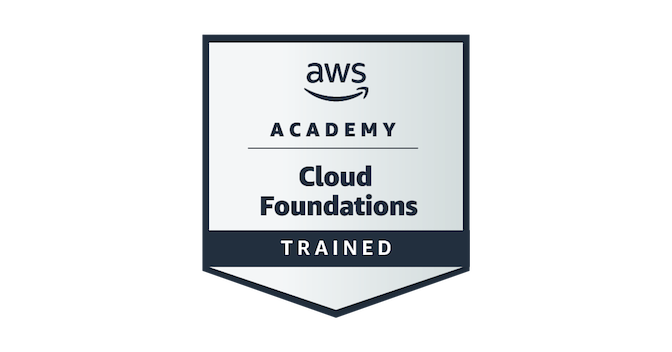
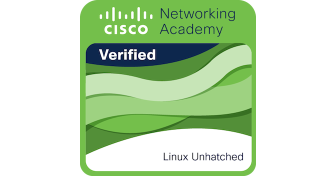
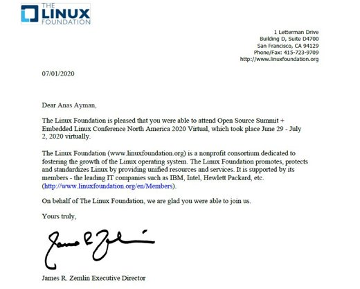

Coursera · IBM
IBM IT Project Manager Professional Certificate
In progress11-course series
Course page →DevOps · HPC · AI Engineer - building reliable platforms, and teaching what I learn
Computer Engineer (Nile University, 2025) working across DevOps, High-Performance Computing and AI. I build cloud-native infrastructure and CI/CD pipelines, have administered production HPC clusters, and love squeezing real workloads onto small hardware - from a Raspberry Pi cluster counting stars in Hubble images to deep-learning lane keeping on an RC car - and I teach what I learn, in the spirit of زكاة العلم تعليمه ونشره
Designed and deployed cloud-native infrastructure for a Flask application on a highly available Kubernetes cluster. Provisioned infrastructure with Terraform and configuration with Ansible; Grafana dashboards for observability.
Two-node Raspberry Pi 4 cluster counting stars in high-resolution Hubble images with distributed image processing over MPI.
End-to-end deep learning model for lane keeping trained with behavioral cloning on synthetic data, tested on a 1/10-scale RC car.
Proof-of-concept AWS Landing Zone within Free Tier limits, provisioned by GitHub Actions pipelines.
Automated build, test and deployment stages for containerized Spring Boot microservices with GitLab CI/CD.
Secure CI/CD pipeline automating build, security scanning and deployment of a Spring Boot microservice.
CI/CD pipeline for React applications implementing DevSecOps practices.
Scripts that scaffold Terraform projects and generate architecture diagrams automatically.
Records mission video with GPS coordinates and FPS overlaid in real time; saves to USB storage for retrieval.
Sensor-driven irrigation that starts or stops the pump on soil-moisture thresholds.
Face identity extraction with OpenCV and Histogram of Oriented Gradients on a Raspberry Pi 3B+.
A student initiative that builds practical Linux and open-source skills - Linux fundamentals, networking and Docker - as the foundation for embedded systems, cloud, DevOps, MLOps and HPC careers.
Learn more →







Containerized static website: Docker image build, tagging and Docker Hub publishing, run with containers and volumes
Repository →Free-tier AWS landing zone in Terraform: VPC networking, EC2 compute and centralized logging, delivered in phases
Repository →Hands-on Git workflow scenario: branching, merging, rebasing and history management across develop and alpha branches
Repository →DevOps internship tasks at Fawry: a grep-like Bash pattern-matching tool and troubleshooting internal web dashboard connectivity
Repository →Hardware system documentation and code for the Machathon 5.0 autonomous 1/10-scale race cars (ROS 2, micro-ROS)
Repository →